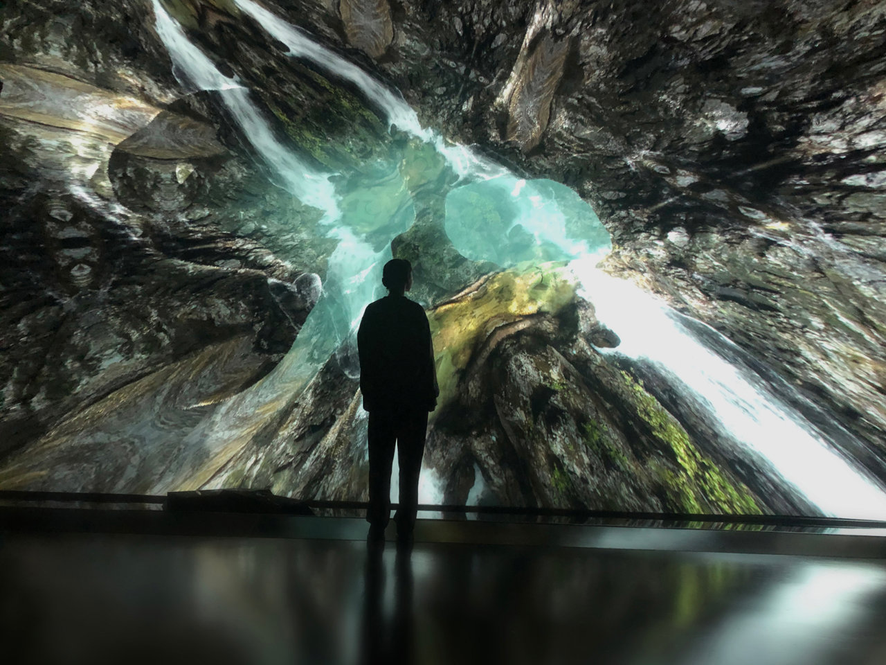

Habitat
Habitat is an interactive installation by Heleen Blanken with sound design by Stijn van Beek and software by NAP Labs (fka Naivi). The work presents large organic environments accompanied by dynamic audio compositions that respond to the movement of visitors on the museum floor. The software is completely data-driven and features an interface that allows the artist to compose lively environments using custom-made assets such as geometric structures, 4k video and high-res images.
My contribution to the work was modernizing the rendering backend to Vulkan, implementing a built-in ultra high-resolution frame capture, plus several additions and improvements to the artist's tools.
Two blogs about I wrote that feature Habitat:
